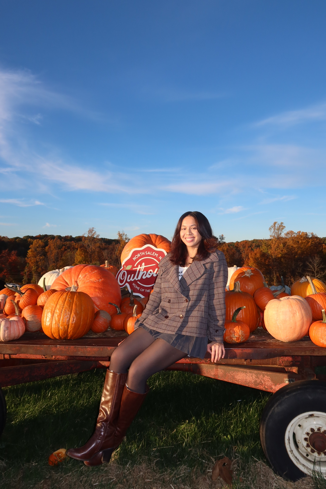

Digital Health Research Intern
HITLAB
Supported digital health research, including an IRB-approved Alzheimer’s EEG study. I contacted up to 50 neurology clinics and tracked responses to identify potential research partners.
Biomedical Engineering · New York University
I’m an NYU biomedical engineering master’s student with a background in biomechanics, prosthetics research, and direct patient care. My projects span surgical navigation, rehabilitation robotics, and accessible technology.
Seeking a summer internship in medical device design or R&D

Master’s in Biomedical Engineering · Expected December 2027
BA in Biomechanics, minor in Mathematics · December 2025
Research & device design
Capstone · Aug 2024 – May 2025
I developed a wireless, IMU-based surgical navigation prototype using an ESP32-S2 to measure femoral rotation in real time. I designed the enclosure and K-wire attachment with mechanical stability and sterile sleeve deployment in mind.
Research · Sep 2026 – Present
Through NYU’s Vertically Integrated Projects program, I study accessibility barriers and explore how extended reality, spatial computing, and multimodal interfaces could support people who are blind or have low vision.
Robotics · Jan – May 2026
I developed a motorized hand rehabilitation system using MATLAB, Simulink, and an Omni Haptic Device. I tracked stylus motion in real time and integrated EMG sensors to measure muscle activity for feedback and device control.
Implant design · Jan – May 2026
I modeled a hip implant concept in Fusion 360 and evaluated load distribution, anatomical fit, and joint stability.
Applied biomechanics · Jan – May 2026
I used biomechanics principles to analyze impact forces and model a protective device prototype in Fusion 360.
Research & patient care
HITLAB
Supported digital health research, including an IRB-approved Alzheimer’s EEG study. I contacted up to 50 neurology clinics and tracked responses to identify potential research partners.
Westchester Root Canals
Assisted chairside during exams and procedures, sterilized instruments, and prepared treatment rooms.
Nebraska Methodist Hospital
Provided direct care in orthopedics and neurology under RN supervision, helping patients with mobility, daily activities, and rehabilitation and recording vital signs.
University of Nebraska at Omaha · Department of Biomechanics
Fabricated and customized 3D-printed prosthetic devices, researched lower-limb prosthetic socket liners, and collaborated with patients on personalized prosthetic solutions.